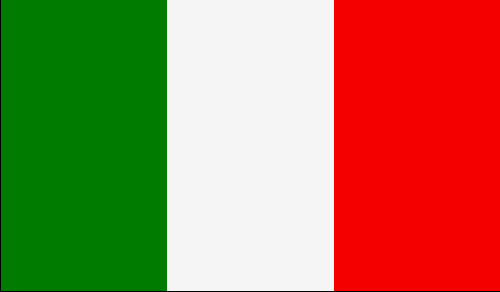

|
Länderinformationen Italien
1. Das Wichtigste auf einen Blick2. Sehens- und Hörenswertes
3. Politik & Gesellschaft
4. Schmeckenswertes
5. Medien
6. Reisetipps
1. Wissenswertes
|  | Hier
haben wir die wichtigsten Zahlen und Fakten zu Italien
und der italienischen Sprache zusammengetragen. |
Ciao bella (oder bello)! Willkommen zu unserem Italienischkurs von Sprachlernen24! Um Ihr Interesse an und Ihre Lust auf Sprache und Land zu wecken, haben wir im Folgenden wichtige und interessante Zahlen und Fakten über die italienische Sprache und das Land Italien zusammengetragen. Allora andiamo!
 Es
ist schön und es lohnt sich, Italienisch zu
Es
ist schön und es lohnt sich, Italienisch zu
lernen!
lernen!
Kenntnisse über das Land Italien, die Kultur, die Geschichte und die italienische Sprache sind wichtige Bausteine einer guten Allgemeinbildung. Nicht zu vergessen die Faszination, die die heitere und unbeschwerte Lebensart der Italiener auf uns ausübt. Italien hat auch die deutsche Kultur entscheidend mitgeprägt. Italienische Komponisten, Schriftsteller, Maler, Bildhauer, Architekten, Filmregisseure und Designer sind in der ganzen Welt bekannt. Wer Italienisch lernt, erschließt sich eine neue, faszinierende Welt mit viel Lebensqualität, neuen Freundschaften und kulturellen Impulsen. Die italienische Sprache ist harmonisch und musikalisch. Wer Italienisch spricht, hat oft auch wenig Probleme, sich schnell eine weitere romanische Sprache (z.B. Spanisch oder Französisch) anzueignen.
Außerdem ist Italien unbeschreiblich schön: nicht zufällig ist Italien eines der beliebtesten Reiseziele der Deutschen. Um sich in Italien zu Hause fühlen zu können und die Menschen besser kennenzulernen, ist es wichtig, ihre Sprache und Kultur zu kennen.
Nicht zu vergessen die „Cucina italiana", die italienische Küche, die für jeden Feinschmecker ein wahrer Genuss ist.
Auch in Deutschland kann man mit Italienischkenntnissen schnell Kontakte knüpfen und neue Freundschaften schließen: Hier wohnen mehr als 700.000 Italiener.
Also: Italienisch lernen lohnt sich bestimmt!
 Die
italienische Sprache (la lingua italiana)
und
Die
italienische Sprache (la lingua italiana)
und
ihre Verbreitung
ihre Verbreitung
Etwa 70 Millionen Menschen sprechen Italienisch als Muttersprache. Sie leben überwiegend in Italien, aber auch im Süden der Schweiz – der „italienischen Schweiz“ – und in der selbständigen Republik San Marino und dem Vatikan (hier gilt Italienisch als offizielle Sprache neben dem Lateinischen). Italienisch wird auch von der italienischen Bevölkerung in Istrien (einer Region in Slowenien und Kroatien) und Dalmatien (Kroatien) gesprochen. Bemerkenswert ist, dass die einheimische Bevölkerung von Korsika einen italienischen Dialekt spricht. Die korsische Sprache ist eine italo-romanische Sprache, die vor allem durch toskanische und genovesische Dialekte beeinflusst wurde. Im französischen Département Alpes-Maritimes – vor allem in dessen Hauptstadt Nizza – und im Fürstentum Monaco verstehen viele Menschen Italienisch ohne Probleme. Das Fernsehen hat bewirkt, dass auch viele Albaner sich Italienischkenntnisse angeeignet haben. Auch in Malta, wo Italienisch eine wichtige Rolle als Bildungssprache spielt, wird la lingua del Bel Paese (dt. die Sprache des schönen Landes) von vielen verstanden. In den ehemaligen Kolonien Eritrea, Äthiopien und Libyen spielt das Italienische ebenfalls noch eine tragende Rolle als Handels- und Bildungssprache. Darüber hinaus existieren wegen der in der Vergangenheit starken italienischen Auswanderungsbewegung auch mehrere italienischsprachige Gemeinschaften auf dem amerikanischen Kontinent, vor allem in Argentinien (man hat errechnet, dass mehr als 35 Prozent aller Argentinier italienischer Abstammung sind), Brasilien (11 Prozent der brasilianischen Gesamtbevölkerung sind italienischer Herkunft), USA, Kanada, Mexiko, Venezuela und Uruguay.
 Minderheitssprachen
auf italienischem Gebiet
Minderheitssprachen
auf italienischem Gebiet
Ungefähr drei Millionen italienische Staatsbürger haben eine andere Sprache als Primär- und Muttersprache. Die größte Minderheit an den Rändern des italienischen Staates stellen die Sarden (circa 1,6 Millionen), die Friauler (circa 800.000) und die Südtiroler (circa 300.000). Bemerkenswert sind auch Enklaven, in denen Provenzialisch (Aostatal, Piemont und Apulien) und Okzitanisch (Piemont, Apulien und Kalabrien) gesprochen werden.
Im größten Teil des Friaul wird das so genannte Friaulisch gesprochen, das zur Familie der rätoromanischen Sprachen gerechnet wird. In drei italienischen Provinzen (Udine, Pordenone und Triest) wird die Sprache auch in der Schule unterrichtet. In Friaul-Julisch Venetien finden Sie auch slowenische und kroatische Sprachinseln. In drei italienischen Provinzen (Udine, Görz und Triest) bieten rund fünfzig Grundschulen auch Slowenisch als Unterrichtsfach an.
Im Süden gibt es kleine Gemeinschaften von vor langer Zeit eingewanderten Albanern (in Sizilien, Apulien, Molise, Kalabrien, Kampanien, Basilikata und den Abruzzen) sowie Griechen (in Apulien und Kalabrien), die bereits seit der Antike hier leben. In der Region um Molise (in der Provinz Campobasso) bilden drei kleine Orte seit dem 15.Jahrhundert eine kroatische Sprachinsel mit etwa 3.000 Sprechern. In der Stadt Alghero auf Sardinien wird dagegen Katalanisch gesprochen. Ebenfalls interessant ist es, die in Südtirol vertretenen Sprachen zu untersuchen: Südtirol teilt sich in die beiden autonomen Provinzen Bozen und Trient. Im Osten der Provinzen Bozen (im Grödnertal, Gadertal und Nonstal) und Trient (im Fassatal und Buchensteintal) wird das Ladinische – oder auch Dolomitenladinisch – gesprochen. Ladinisch ist eine romanische Sprache, die von ungefähr 30.000 Muttersprachlern benutzt wird, deren oben genannte Siedlungsgebiete einen offiziellen Status genießen. Ladinisch wird auch an den Schulen dieser Regionen gelehrt. Eine weitere ladinische Sprachinsel findet sich in der Provinz Veneto Belluno, die die Stadt Cortina d'Ampezzo einschließt.
In den so genannten Sieben Gemeinden (ital. Sette Comuni, gelegen in der Hochebene von Asagio) und den Dreizehn Gemeinden (ital. Tredici Comuni, verstreut in den Südtälern der Lessinischen Alpen) wird traditionell Zimbrisch gesprochen, ein altertümlicher bayrischer Dialekt. Zimbrisch geht zurück auf die Einwanderung von Bayern aus dem Lechtal nach Italien im Mittelalter. In den meisten Dörfern ist das Zimbrische jedoch (fast) ausgestorben. Erst in der jüngsten Vergangenheit versucht man das Zimbrische wiederzubeleben, indem man es zum Beispiel in den Kindergärten und den Grundschulen der Dörfer gemeinsam mit den Kindern pflegt.
In der Provinz Bozen wird (von den beiden ladinischen Tälern abgesehen) überwiegend Tirolerisch gesprochen. Lediglich in der Stadt Bozen und in Meran sowie in der Region um Überetsch im Süden stellen Italienischsprecher etwa die Hälfte der Bevölkerung (in Bozen sind es sogar 70 Prozent). Dies geht auf Zuwanderungen in jüngster Zeit zurück.
 Die
Dialekte der italienischen Sprache
Die
Dialekte der italienischen Sprache
In
Italien sind Dialekte im ganzen
Land weit verbreitet.
In den
Städten und auf den Dörfern werden heute gleichzeitig
Standard-Italienisch und Dialekt – oft auch in Mischformen
beider Varianten – gesprochen. Die einzelnen Dialekte des
Italienischen unterscheiden sich teilweise sehr stark voneinander, in
einigen Fällen ist ihr Status als Dialekt oder eigenständige
Sprache auch unter Linguisten
umstritten. Wie Sie im nächsten Kapitel sehen werden, gehen alle
italienischen Dialekte und in Italien gesprochenen romanischen
Sprachen unmittelbar zurück auf das „Vulgär-Lateinische“.Es ist wichtig anzumerken, dass es sich bei den italienischen Dialekten nicht um degenerierte Formen des italienischen Sprachstandards handelt. Die Dialekte verfügen über eine eigene Sprachgeschichte und einige von ihnen, wie das Sizilianische oder das Venezianische, können stolz auf eine eigene literarische Tradition verweisen. Für die Entstehung der italienischen Standardsprache leisteten die Dialekte einen sehr wichtigen Beitrag. Zahlreiche italienische Schriftsteller haben immer wieder daran gearbeitet, Ausdrücke und Wörter aus den Dialekten einer Mehrheit der Italiener verständlich zu machen und sie so in den Standard der Sprache zu integrieren.
Bis zur politischen Vereinigung Italiens 1861 wurde die italienische Sprache außerhalb der Toskana nur von Angehörigen der Oberschicht gesprochen. Obwohl zu diesem Zeitpunkt das Standard-Italienische zur alleinigen Schriftsprache in Italien erhoben wurde, waren die Dialekte bis zum Zweiten Weltkrieg die allgemeine Umgangssprache. Ziehen wir zum Vergleich die Entwicklung der Standardsprache in Deutschland heran: Auch dort ist eine nationale Einigung erst spät erfolgt (1870), dennoch hat sich dort eine Nationalsprache etabliert, aufgrund von Faktoren, die in Italien fehlten. Die Mehrheit der Deutschen konnte zu diesen Zeitpunkt sowohl lesen als auch schreiben. Begünstigt wurde die Alphabetisierung in Deutschland vor allem durch den Einfluss des Protestantismus, der vorschrieb, die Bibel selbst zu lesen. In Italien dagegen waren zu diesem Zeitpunkt (1861) noch 80 Prozent der Bevölkerung Analphabeten. Nur drei Prozent der Bevölkerung sprach Italienisch – alle übrigen Bewohner konnten sich nur in ihren Dialekten verständigen. Die Schwierigkeit bei der Durchsetzung eines landesweiten Standards war, dass man die Verbreitung einer Sprache nicht einfach per Gesetz oder durch Grammatiken und Wörterbücher anordnen konnte. Eine solche Veränderung konnte nur durch gesellschaftliche Faktoren gefördert werden.
Die Einführung und Ausdehnung der modernen Medien (vor allem) nach dem Zweiten Weltkrieg – Tonfilm, Radio und Fernsehen – waren die Faktoren, die die Verbreitung der italienischen Standardsprache in ganz Italien entscheidend prägten. Kino und Fernsehen haben so als Medien eine linguistische und kulturelle Vereinheitlichung bei der Bevölkerung durchsetzen können. Die für ein breites Publikum bestimmten Filme erfordern Dialoge mit kurzer, einfacher Sprache, das heißt den Gebrauch von traditionellen, allen Bürgern bekannten sprachlichen Formen. Durch die Medien wurde sogar eine „Italianisierung“ der verschiedenen Dialekte erreicht. Die Formen und Strukturen der Standardsprache haben auch die Formen und die Strukturen der verschiedenen italienischen Mundarten beeinflusst. Inzwischen wächst die Anzahl der Sprecher, die Italienisch als Muttersprache sprechen, beständig weiter. Mit diesem Anwachsen geht einher, dass gleichzeitig die Anzahl der Dialektsprecher immer kleiner wird. Anderseits ist es kein Widerspruch – vielmehr eine Konstante der Sprachgeschichte – dass auch heute noch die Dialekte einen fortwährenden Einfluss auf die italienische Standardsprache haben.
Die
italienische Sprache und ihre Geschichte
Italienisch ist eine romanische Sprache aus der Familie der indogermanischen Sprachen. Wie auch Französisch, Spanisch, Portugiesisch und Rumänisch leitet sich die Sprache von Bel Paese aus dem Latein ab. Genauer gesagt wurde Italienisch aus der Anpassung des Lateinischen an eine lokale Mundart geboren.
Als Folge der Entstehung und Ausdehnung des Römischen Reiches wurde die lateinische Sprache zunächst in Italien verbreitet und so schließlich in weite Teile des Imperiums getragen. Sogar nach dem Zerfall des römischen Imperiums blieb in Italien lange Zeit das Lateinische die Schriftsprache: Latein wurde verwendet als die Sprache der Diplomatie, der Kirche und der Literatur. Aber in der gesprochenen Sprache hat sich das Latein nirgends in der Form erhalten, wie wir es von Cicero und Virgil her kennen, sondern es hat sich weiterentwickelt zu etwas anderem, neuem. Das gesprochene Latein hat sich in Italien mit anderen lokalen Mundarten vermischt und so ist eine neue Sprache – das Italienische – entstanden.
Sprachwissenschaftliche Untersuchungen haben gezeigt, dass die romanischen Sprachen nicht direkt aus dem klassischen Latein abgeleitet werden können, sondern der „gesprochenen Sprache“ entsprungen sind. Italienisch ist innerhalb der Sprachfamilie romanischer Sprachen keine Ausnahme. Es wurde oft behauptet, dass Italienisch von einem Dialekt des Lateinischen (dem so genannten Vulgärlatein) abstammt. Das ist aber nur insofern korrekt, als dass dieses Vulgärlatein (ital. volgare) keine einheitliche Sprache, sondern eine Abstraktion von zahlreichen lokalen Dialekten war. Ein „Lateinsprecher“, der damals die ganze Halbinsel Italiens entlang gereist wäre, hätte verschiedenste und für ihn nicht verständliche Sprachen gehört, die aber auf ein aufmerksames Studium hin deutliche Gemeinsamkeiten mit dem Lateinischen aufweisen. Die gleiche Erfahrung macht heute ein Deutscher, der in die Niederlande oder nach Dänemark reist.
Nach dem Zerfall des Römischen Imperiums (476 nach Christus) haben sich die unterschiedlichen Dialekte eigenständig weiterentwickelt, aber ohne dass jemals einer von ihnen alle Charakteristika einer wirklichen Sprache entwickelt hätte. Eine Sprache verdient aus linguistischer Sicht diese Bezeichnung nämlich erst dann, wenn man sie in allen Bereichen einer Gesellschaft (Geschichte, Glauben, Philosophie, Wissenschaften etc.) einsetzen kann. Diese „Nicht"-Entwicklung zur Sprache hin ist auch auf einen Mangel an politischer und zentralistischer Organisation zurückzuführen, der die Verbreitung einer gemeinsamen Sprache hätte erlauben könnte. Am Ende des Römischen Reiches hat das Latein seine Erbschaft in den verschiedenen Dialekten vieler Regionen, einschließlich aller Regionen Italiens, hinterlassen. Was also als Vulgärlatein bezeichnet wird, ist keine einheitliche Sprache mit einheitlichen Charakteristiken (von Sizilien bis zu Lombardei). Es handelt sich hier vielmehr um einen theoretischen Begriff, den man verwenden kann, weil man gemeinsame Eigenschaften der verschiedenen Dialekte findet. Das Vulgärlatein besteht also aus einer Vielzahl von lokalen Mundarten.
Bis ins 12. Jahrhundert blieb Latein auf der italienischen Halbinsel als Schriftsprache verbreitet. Jedoch haben sich die regionalen Mundarten im Laufe der Zeit immer mehr vom eigentlichen Latein weg entwickelt. Das so genannte indovinello veronese, ein kurzes Rätsel verfasst Ende des 8. oder Anfang des 9. Jahrhunderts von einem Schreiber aus Verona, ist noch in einer Mischung aus Volkssprache und Latein geschrieben. Wenn wir dieses Dokument mit den juristischen Texten der Placiti Cassinesi (entstanden von 960 bis 963 n.Chr.) vergleichen, merken wir wie weit sich die italienischen Dialekte in nur zweihundert Jahren vom Latein fortentwickelt haben. Bei den Texten der Placiti Cassinesi handelt es sich um vier lateinische Gerichtsurteile, in denen der Grundbesitz von Klöstern in Kampanien (genauer in den Städten Capua, Sessa Aruncia und Teano) rechtskräftig bestätigt wird. In diesen Urteilen fanden Linguisten volkssprachliche Beschwörungsformeln eingebettet, die schriftlich genau so festgehalten worden waren, wie sie die Zeugen mündlich vorgetragen haben.
Im 13. Jahrhundert setzt sich die Vulgärsprache zunehmend vom Lateinischen ab und wird allmählich zu einer literarischen Sprache. Der Sonnengesang Cantico delle Creature des Heiligen Franz von Assisi (1181-1226) ist die erste in Vulgärsprache geschriebene Versdichtung. Am Hofe Kaiser Friedrichs II. in Sizilien entstand eine höfische Liebeslyrik nach dem Modell des provenzalischen Minnegesangs, für die ein entdialektisiertes und mit Provenzalismen angereichertes Sizilianisch verwendet wurde. Die Dichtung der "Sizilianischen Schule" wurde noch im selben Jahrhundert zuerst von Guittone d'Arezzo und den sogenannten „toskanischen Sizilianern“, dann von den Dichtern des dolce stil novo (dt. süßer neuer Stil) – eine literarische Bewegung in der Toskana im 13. und 14. Jahrhundert – weiterentwickelt. Die Liebe (amore) wird entsprechend der platonischen Ideenlehre und höfisch-literarischer Anschauungen überhöht und als göttliche Kraft gesehen und mit einem ausgefeilten System von Metaphern und Symbolen beschrieben. Neu ist die Selbstbeobachtung des Dichters, der die Wirkung weiblicher Schönheit auf seine Seele detailliert beschreibt, dabei aber vor allem Wert auf sprachliche Raffinesse und weniger auf authentische Darstellung des Erlebnisses legt. Für die Beschreibung der Schönheit der angebeteten Frau finden die Dichter des dolce stil novo eine Vielzahl von Bildern; die Geliebte erscheint als paradiesisches Wesen, als Engel oder als göttliche Braut und wird so in die Sphäre des Überirdischen entrückt.
Ein noch größerer Impuls für die Entwicklung eines „linguistisch einheitlichen Modells“ der italienischen Sprache ging im 14.Jahrhundert vor allem von drei berühmten Dichtern aus. Diese so genannten tre corone (dt. die drei Gekrönten) waren Francesco Petrarca (1304 - 1374), Giovanni Boccaccio (1313 - 1375) und Dante Alighieri. Alle drei bedienten sich in ihren Werken des florentinischen Dialekts. Ihre Werke wurden mit großer Begeisterung innerhalb und, was bemerkenswert ist, auch außerhalb der Toskana gelesen und sind so zu einem Modell der literarischen Sprache geworden. Es war der Verdienst dieser drei Dichter, dass sich ein überregionales Italienisch auf dieser toskanischen Grundlage allmählich in ganz Italien durchsetzte. Die Grammatik, das Vokabular und die Stilistik jener großen Schriftsteller wurde auf der ganzen italienischen Halbinsel von kultivierten und einflussreichen Personen imitiert. Francesco Petrarca schrieb den Canzoniere, einen Zyklus von Gedichten, die alle an eine Frau gerichtet sind, die er vergeblich liebte. Petrarca sah das Volgare als Sprache eines raffinierten poetischen Stils. Giovanni Boccaccio schrieb dagegen in dem Buch Decamerone hundert kleine Geschichten auf, die ganz unterschiedlich, manchmal traurig, manchmal dramatisch, aber oft auch sehr witzig und ganz schön frech sind. Die Liebe war das zentrale Thema seines Werkes. Die Sprache Boccaccios zeigt starke Einflüsse der Antike, andererseits finden sich auch etliche Charakteristika des gesprochenen Volksitalienisch (Italiano popolare).
Aber der eigentliche Grund dafür, dass sich im 14. Jahrhundert der florentinische Dialekt innerhalb ganz Italiens durchsetzen konnte, kann mit einem Namen verbunden werden: Dante (1265 - 1321), der als „Vater“ der italienischen Sprache gilt. Dante Alighieri trug sowohl theoretisch als auch praktisch zur Entwicklung des Italienischen bei. Er sah zwar das Lateinische als sovrano (als Herrscher) an, wie er in seinem Werk Convivio schrieb, plädierte jedoch für die Verbreitung des Volgare, das er durch den dolce stil novo geadelt und als Sprache benutzte, um einen weiten Leserkreis anzusprechen. Durch ihn wurde Florentinisch zur Dichtersprache Italiens.
Wegen seiner Verbannung aus Florenz verachtete Dante das Toskanische und versuchte eine Kunstsprache, die die besten Eigenschaften der italienischen Dialekte vereinen sollte, zu erschaffen. Dennoch orientierte er sich beim Schreiben seines Hauptwerkes Divina Commedia am literarischen Florentinisch seiner Jugend, übernahm aber teilweise Wendungen aus anderen Dialekten Italiens und schuf so neue, kreative Wortbildungen. Die Göttliche Komödie schildert in der Ichform eine Reise durch die drei Reiche der jenseitigen Welt: Inferno (Hölle), Purgatorio (Fegefeuer) und Paradiso (Paradies). Am wichtigsten ist aber ohne Zweifel die Tatsache, dass Dante mit der Divina Commedia weniger als ein Jahrhundert nach dem Beginn der italienischen Literatur ein literarisches Meisterwerk geschaffen und damit gezeigt hat, wozu die italienische Sprache fähig ist.
Ganz wichtig für die italienische Literaturgeschichte ist auch ein in Latein verfasstes Werk, De vulgari eloquentia, ein Traktat über die Herkunft der Sprache und der Dichtung, das sich an ein gelehrtes Publikum richtete. In diesem Werk plädierte Dante für das Volgare und stellte eine literarische Tradition auf für die „vulgären Sprachen“, die Sprachen die in den Regionen Italiens vom Volk gesprochen wurden. In seinem Traktat schrieb Dante, dass die Italiener eine Nation bilden sollten, die eine gemeinsame gehobene Volkssprache brauche. Nach Durchsicht der verschiedenen Dialekte Italiens glaubte Dante, diese Leitsprache im Toskanischen des dolce stil nuovo gefunden zu haben. Dante erläuterte die vier Eigenschaften, die seine angestrebte Sprache erfüllen sollte: Die neue Sprache sollte illustre (dt. erlaucht, kunstvoll) sein, um strahlend und edel über den Dialekten zu stehen. Als zweite Eigenschaft sollte sie cardinale (dt. maßgebend, vorbildhaft) sein, weil sie eine zentrale Stellung einnehmen sollte. Als dritte Eigenschaft zählte Dante aulicum (dt. bei Hof gesprochen) auf, um Sprache eines Königshofs zu sein. Schließlich sollte die Sprache curiale (dt. höfisch) sein, weil sie dem erhabenen Stil der feierlichen öffentlichen Rede vor der Kurie entsprechen sollte.
Nachdem im 15. Jahrhundert die italienische Volkssprache während des Humanismus durch die wiederentdeckte Liebe zur antiken Literatur und dem Latein an Prestige verloren hatte, stand die Suche nach einem einheitlichen Volgare-Modell im 16. Jahrhundert wieder als Kernproblem im Mittelpunkt der sprachlichen Entwicklungen. Wie bereits früher, bestand auch zu dieser Zeit weder eine politische Notwendigkeit noch eine politische Basis für eine sprachliche Einigung, denn Italien blieb weiter in eine Vielzahl von Territorien und Herrschaftsbereiche zersplittert. Dennoch diskutierte man in den kulturellen Zentren über die italienische Sprache, der aufgrund der politischen Vielfalt eine besondere Rolle zukam, und man stand nun vor dem Problem der Schaffung zuverlässiger Sprachregeln. Um dieses Problem zu lösen wäre aber eine grundsätzliche Entscheidung für ein Modell unabdingbare Voraussetzung gewesen.
Also, welche „Volgare“ sollte als „Vulgare illustre“ ausgewählt werden? Hier hatte Pietro Bembo (1470-1547), ein typischer Vertreter der Renaissance und berühmter Intellektueller seiner Zeit, großen Anteil an der Entstehung einer gemeinsamen italienischen Sprache. In seinen Abhandlungen, vor allem in Le prose della volgar lingua (1525), verlieh Bembo, der Venezianer war, der Sprache Petrarcas eine Vorbildfunktion für die Lyrik und stellte Boccaccios Prosa als richtungsweisend heraus. Seine Werke bildeten die Grundlage für die systematische Erfassung der italienischen Rechtschreibung und Grammatik und ermöglichten so die Einführung einer Standardsprache. Für Bembo war die Volkssprache von den großen Dichtern des 14. Jahrhunderts zu einer solchen Höhe emporgetragen worden, dass sie dem Lateinischen an Ausdrucksfähigkeit (copia), an Größe (grandezza) und Anmut (piacevolezza) gleich, wenn nicht gar überlegen war. Als Antwort auf die Frage „Warum sollten wir in einer Sprache schreiben, in der wir nicht leben?“, schrieb Bembo, dass die volgar lingua für die Italiener natia et propria, et la Latina straniera... sei (dt. „die Volkssprache ist vorzuziehen, weil sie die natürliche und eigene ist und das Latein eine fremde Sprache ist“).
Mit seinem Wirken hatte Bembo entscheidenden Einfluss auf Ludovico Ariosto (1474 – 1533), den herausragenden italienischen Dichter des 16. Jahrhunderts. Ihn inspirierte er zu einer dritten Bearbeitung seines Orlando furioso (1532). Auch auf die Accademia della Crusca hatte er Einfluss. Diese wurde 1582 in Florenz von Leonardo Salviati (1540 - 1589) gegründet und trug entscheidend zur Durchsetzung des fiorentino bei. Die Accademia della Crusca gilt als die älteste Sprachgesellschaft und ihre Aufgabe ist bis heute das Studium und Bewahren der italienischen Sprache. Als Symbol der Sprachgesellschaft wurde eine Mehlmühle gewählt, wobei die Reinheit des Mehls eine Metapher für die Reinheit der Sprache war. Ihr Ziel war es, dem Motto „die Kleie vom Mehl zu scheiden“ gemäß (auf Deutsch würde man sagen „die Spreu vom Weizen zu trennen“, also das Schlechte vom Guten), die italienische Sprache zu wahren und zu fördern. 1612 gab die Gesellschaft das Vocabulario degli Accademici della Crusca heraus, das erste Wörterbuch der italienischen Sprache, von literarischen Kreisen in Italien schon seit Jahren mit Spannung erwartet. Das sehr reichhaltige Wörterbuch enthält auch sehr viele Wörter, die zum Zeitpunkt seines Erscheinens bereits völlig außer Gebrauch waren.
Die höchste Stufe des Ausbaus einer Sprache ist dann erreicht, wenn sie für alle Bereiche
der Wissenschaft verwendet werden kann. Obwohl das Italienische hinsichtlich seiner Orthographie, der Phonetik, der Morphologie und seiner Syntax ausgearbeitet wurde, hatte es dieses Ziel im 15. Jahrhundert noch nicht ganz erreicht. Zu dieser Zeit spielt Latein noch unangefochten die Rolle der Wissenschaftssprache. Trotzdem sind die Fortschritte für die weitere Entwicklung, hin zur eigenständigen und vollwertigen Sprache relevant.
Schon ab Ende des 15. Jahrhunderts gab es Darstellungen der Militärtechnik und Architektur sowie Werke zur Malerei und Architektur auf Vulgärlatein: den Anfang machte Leonardo da Vinci (1452-1519) im Jahre 1490 mit seiner Abhandlung Trattato della pittura. Das Ziel der Popularisierung verfolgte vor allem Cosimo I. de' Medici, dessen Familie im 15. und 16. Jahrhundert über Florenz geherrscht hat. Er gründete zwei Akademien, die Accademia Fiorentina (1541) und die Accademia dell' Arte del Disegno (1563), die den von ihnen geförderten Wissenschaften erhebliche Breitenwirkung verschafften. Von den Professoren der Accademia Fiorentina verlangte Cosimo I., dass sie ihre öffentlichen Vorlesungen auf Italienisch abhielten. Gleichzeitig sollte die Akademie dafür Sorge tragen, dass alle in griechischer Sprache abgefassten wissenschaftlichen und gelehrten Werke ins Italienische übersetzt werden.
Sehr wichtig waren auch die Beiträge von Giordano Bruno (1548-1600) für die Philosophie und Galileo Galilei (1564-1642) für Mathematik, Physik und Astronomie. Da Galilei seine Entdeckungen 1632 als Dialog über die Weltsysteme in einem Buch in italienischer Sprache (nicht auf Latein, wie damals in akademischen Kreisen üblich) veröffentlichte, fanden seine Auffassungen bald auch außerhalb der Universitäten breite Zustimmung und er geriet in ernsten Konflikt mit der katholischen Kirche. Sein Ziel war es, für das ganze italienische Volk verständlich zu schreiben. Für die reine Mathematik blieb Latein bis ins 18. Jahrhundert das alleinige Medium, in der Medizin wurde es für dokumentarische Zwecke eingesetzt. Neu entstehende Wissenschaften bedienten sich beider Sprachen, zum Beispiel die Elektrizitätslehre.
Im 18. Jahrhundert trat Latein als Wissenschaftssprache immer deutlicher zurück. Viele Autoren begannen ihre Werke auf Italienisch zu veröffentlichen.
Diese Autoren entschieden sich - unabhängig von ihrer Herkunft - gegen das Latein und ebenso gegen ihren jeweiligen Dialekt. Sie alle schrieben in der toskanischen Schriftsprache ihre Werke nieder. Somit gewann die toskanische Schriftsprache enorm an Bedeutung. Aber erst gegen Ende des 18. Jahrhunderts hat das Italienische das Latein schließlich in all seinen Funktionen weitgehend abgelöst.
Im 19. Jahrhundert hat sich der historische Hintergrund beträchtlich geändert, vor dem die questione della lingua (dt. die Frage der Sprache) wieder auflebt. Die Hoffnung auf die Befreiung und Vereinigung Italiens bildete seit dem 13. Jahrhundert ein wichtiges Thema der italienischen Literatur. Die italienischen Staaten und Fürstentümer waren schon länger ein politischer Spielball der europäischen Großmächte gewesen. Durch Napoleon und den Einmarsch der französischen Truppen in Italien 1796 begann für Italien ein neuer Abschnitt der Geschichte. Außer der Toskana und Venetien war nun das ganze italienische Festland erstmals seit vielen Jahren unter einheitlicher Herrschaft – allerdings unter französischer Fremdherrschaft. „... Eine einzige Nation, und Rom ist ohne Zweifel die Hauptstadt, welche eines Tages die Italiener wählen werden“, so versprach es Napoleon den Italienern. Trotz der Unzufriedenheit der Italiener (sie waren unterworfen worden und mussten all ihre revolutionären Hoffnungen begraben), entstand nun doch ein italienisches Nationalgefühl.
Nach dem Sturz Napoleons erfolgte die Restauration durch den Wiener Kongress: 1815 wurde die Halbinsel unter österreichischer Oberherrschaft wieder in die alten Kleinstaaten aufgeteilt. Italien wurde danach wieder nur ein geographischer Begriff, doch die Idee des Risorgimento, die italienische Nation als Staat anzusehen, war nicht mehr aufzuhalten.
In dieser Epoche, die auf das napoleonische Zeitalter folgte, führten die politischen und sozialen Umbrüche schließlich zu einer Einigung Italiens. Bereits seit dem Jahr 1820 kam es immer wieder zu revolutionären Erhebungen, vor allem seitens der Geheimbünde. Aufgrund der starken Repression emigrierten viele Unterstützer der Revolution und machten sich weiterhin für die nationale Idee stark. 1831 gründete Giuseppe Mazzini den Geheimbund Giovine Italia (dt. Junges Italien) und in der illegal verbreiteten Zeitung La Giovine Italia forderte Mazzini die Einigung Italiens als demokratische Republik, die durch das Volk, also „von unten“ erkämpft werden müsse. Im Jahr 1848 kam es zu vielen Aufständen von Mailand über Rom und viele andere kleine und große Städte, die allerdings allesamt scheiterten.
Die Idee der nationalen Einigung wurde schließlich vom Königreich Piemont-Sardinien aufgegriffen, um ihren Herrschaftsbereich mit Hilfe Englands und Frankreichs erheblich auszudehnen. Nach dem Sturz der Bourbonen 1861 erklärt das gesamtitalienische Parlament im März Vittorio Emanuele II. zum König von Italien. 1866 kam auch Venetien zu Italien, allerdings ohne Trentino und Istrien. Dies wiederum führte zur Bewegung der „Irredentismus“, die den Anschluss beider Landstriche forderte. Nach längeren Kämpfen wurde letztlich auch der Kirchenstaat Vatikan dazugewonnen und 1871 Rom endgültig die Hauptstadt Italiens.
Politische Einigungsversuche brachten auch die Frage nach einer einheitlichen Sprache wieder zu Tage. Nach der nationalen Einigung musste auch eine nationale Sprachpolitik umgesetzt werden. Das staatliche Engagement zur Herstellung der Spracheinheit war insofern ausgeprägt, als die italienische Regierung die Ideen Alessandro Manzonis wieder aufgriff und das Florentinische zur Grundlage der künftigen Nationalsprache erheben wollte. Die questione della lingua, bis dahin eher ein Streit unter Literaten, wurde erstmals zu einer gesellschaftlichen Frage. Man forderte von den Autoren, dass sie sich einer lebendigen Sprache bedienten, die sowohl im schriftlichen, als auch im mündlichen Gebrauch geeignet sei, zur Nationalsprache zu werden. Diese Forderungen erfüllte zum Beispiel die Sprache Manzonis in dessen Roman I Promessi Sposi. Manzoni verwendete darin eine Sprache für jedermann – aus der Perspektive des einfachen Volkes – und konnte hierdurch von allen (gebildeten) Italienern im ganzen Land gelesen und verstanden werden.
Nach der Einigung wurde Manzoni zum Senator des neuen Königreichs ernannt und im Januar 1868 zum Präsidenten einer Studienkommission berufen, die eine schnelle und effektive Verbreitung der italienischen Sprache durchsetzen sollte. Manzonis begeistertes Engagement in dieser Kommission bezeugte erneut, dass die questione della lingua für ihn nicht nur ein Problem der Literatur, sondern auch der gesprochenen Sprache war. Er forderte einheitliche Kriterien für das Italienische zu schaffen, auf der Basis des aktuellen Florentinischen. So legte er den Grundstein für die heutige Form des Standarditalienisch, wo vor allem in Phonologie und Morphologie toskanische Elemente dominieren.
Heute ist Italienisch eine hochkultivierte Schriftsprache und zunehmend empfänglicher für die Spielarten der gesprochenen Sprache, für individuelle Ausdrucksmöglichkeiten und vor allem für das Studium in verschiedenen Bereichen des Lebens. Auf Italienisch haben weltberühmte Schriftsteller wie Giovanni Verga (1840-1922), Luigi Pirandello (1867-1936), Italo Svevo (1861-1928), Salvatore Quasimodo (1901-1968), Leonardo Sciascia (1921-1989) ihre Werke verfasst. Die Sprache ist geschmeidiger und reicher geworden, oft greift sie auf Neologismen, regionale Ausdrucksweisen und Sonderkonstruktionen zurück.
Italienische ist weiterhin eine gebildete, erlesene Sprache und als solche anregend und aufregend für ein interessiertes, ausländisches Publikum. Schätzungen zufolge sollen in der ganzen Welt rund 200 Millionen Menschen Italienisch sprechen, es lernen oder lernen wollen. Wir freuen uns, auch Sie zu dieser Gruppe zählen zu dürfen und möchten Ihnen nun Interessantes, Wissenswertes und die wichtigsten Fakten zu Italien nennen:
 Geographie
Geographie
Mit einer Fläche von 301.277 km², welche die Form eines Stiefels hat, umfasst das italienische Staatsgebiet den südlichen Teil des Alpenbogens, die Poebene, die Apenninhalbinsel, die großen Mittelmeerinseln Sardinien und Sizilien sowie zahlreiche kleinere Inseln. Zu diesen zählen die äolischen Inseln, die Egadi, die Pelagie und die Pantelleria (um Sizilien), die Tremiti (gegenüber von Apulien), die Flegree (mit den berühmten Inseln Ischia und Capri) und der arcipelago toscano.
Im Osten wird Italien von der Adria, im Westen vom Tyrrhenischen Meer und im Süden vom Ionischen Meer umschlossen. Die Alpen bilden im Norden eine natürliche Grenze zu Frankreich, der Schweiz, Österreich und Slowenien. Landesgrenzen bestehen auch zu den Enklaven San Marino und dem Vatikanstaat.
Wenn Sie jetzt einen Blick auf eine Landkarte Italiens werfen, sehen Sie gleich, dass Italien ein Land der Berge ist. Nur ein Viertel der Oberfläche der italienischen Regionen sind Ebenen, der Rest dagegen erstreckt sich als Hügel- und Berglandschaft. Auch zahlreiche Vulkane erzählen zu den vielen geographischen Erhebungen Italiens. Im Norden des Landes findet man die West- und Zentralalpen Italiens mit dem Gran Paradiso (4.061 m) in den Grajischen Alpen und dem Massiv des Mont Blanc (ital. Monte Bianco) an der italienisch-französisch-schweizerischen Grenze. Auf italienischer Seite befindet sich Italiens höchste Erhebung dieses Massivs, der 4.748 Meter hohe Mont Blanc de Courmayeur. Die Zentralalpen formen die natürlichen Grenzen zur Schweiz und zu Österreich. Sie werden von tiefen Tälern durchschnitten, durch die das abfließende Schmelzwasser nach der Eiszeit die großen italienischen Alpenseen gebildet hat: den Lago Maggiore, den Comer See, den Iseosee und den Gardasee. Weiter östlich liegen die Dolomiten, welche Höhen von über 3000 Metern über dem Meeresspiegel erreichen (Marmolada 3.343 m). Die Venezianischenr Alpen bilden einen sanften Übergang zum Flachland.
Südlich der Alpen und den Apenninen erstreckt sich die 50.000 km² umfassende fruchtbare Poebene, die vom Rand der Westalpen bis an die Adria einen weiten Bogen beschreibt, der sich an der Küste nach Norden und Süden auffächert. Dies ist Italiens fruchtbarste und wirtschaftlich aktivste Region.
Der 1.500 km lange Apennin, der sich in Nord-Süd-Richtung durch ganz Mittel- und Süditalien zieht, wird das "Rückgrat Italiens" genannt. Er erhebt sich langsam aus dem Ligurischen Apennin und geht in den Toskanischen Apennin (Mte. Cimone, 2.165 m) über. Der Zentrale Apennin beginnt an den Quellen des Tiber, erreicht seine größte Höhe in den Abruzzen mit dem 2.914 Meter hohen Corno Grande und zieht sich bis in an die Stiefelspitze im Südosten des Landes, wo er sich in der Insel Sizilien fortsetzt. Dort ist der Ätna mit 3.340 Metern der höchsten Gipfel Italiens außerhalb der Alpen und der größte Vulkan Europas. Zusammen mit dem Stromboli zählt er zu den wenigen noch aktiven Vulkanen. Der Vesuv bei Neapel ist ein weiterer bekannter Vulkan, der heute glücklicherweise inaktiv ist.
Die längsten Flüsse Italiens sind der Po, die Etsch, der Arno und der Tiber. Zu den größten italienischen Seen zählen außer den bereits oben genannten Seen in Oberitalien auch der Lago di Bolsena und der Lago Trasimeno in Mittelitalien. Das Land hat sehr viele Naturschönheiten aufzuweisen, es leidet allerdings auch unter Umweltverschmutzung gerade in den großen Städten und entlang der Küsten.
 Einwohner
Einwohner
In Italien leben rund 58 Millionen Einwohner, das entspricht einer Bevölkerungsdichte von circa 190 Einwohnern pro Quadratkilometer. Gemessen an der Einwohnerzahl liegt Italien innerhalb der Europäischen Union auf dem vierten Rang hinter Deutschland, Frankreich und Großbritannien. Die größten Städte sind Rom (mehr als 2.800.000 Einwohner), Mailand (circa 1.300.000), Neapel (circa 1.000.000), Turin (mehr als 900.000), Palermo (circa 680.000) sowie Genua, Bologna, Florenz, Bari und Catania.
 Währung
Währung
Wie in Deutschland auch, ist der Euro die Währung Italiens.
 Die
wirtschaftliche Situation
Die
wirtschaftliche Situation
Die Wirtschaft Italiens gehört zu den stärksten der Welt. Italien ist daher Mitglied der Gruppe der führenden Industrienationen der Welt, den so genannten G7/ G8-Ländern. Vor allem unter dem Einfluss der Europäischen Union wurde aber in den letzten Jahren in vielen ökonomischen Bereichen dereguliert und privatisiert, sodass sich ein negativer Einfluss auf das Bruttoinlandsprodukt ergeben hat.
Charakteristisch für die Wirtschaft des Landes ist auch die Zweiteilung der Nation. Zwischen dem Norden und dem Süden des Landes tut sich ein breites Wohlstandsgefälle auf. Der Süden des Landes, auch Mezzogiorno genannt, kämpft gegen hohe Arbeitslosigkeit und die organisierte Kriminalität, die die Kontrolle über viele Wirtschaftszweige (selbst im Ausland) ausübt. Die Wirtschaft des Südens Italiens stützt sich vor allem auf die Landwirtschaft, im Norden dagegen ist die Industrie die wichtigste Grundlage der Ökonomie. Wichtige Erzeugnisse der Landwirtschaft sind Wein, Olivenöl, Käse, Schinken, Weizenprodukte und Obst.
Die Stärke der italienischen Wirtschaft liegt im verarbeitenden Gewerbe, vor allem in kleinen und mittelständischen familiengeführten Unternehmen. In der Industrie haben der Maschinenbau und die Verarbeitung von Lebensmitteln sowie die Herstellung von Textilien, Lederprodukten, Kleidung, Eisen, Stahl, Kraftfahrzeugen und Chemikalien große Bedeutung. Weltweit berühmt ist il Bel Paese auch für seine Kleidung und Schuhe. Darüber hinaus spielt der Tourismus eine zentrale ökonomische Rolle.
Im nächsten Kapitel haben wir einige ausgesuchte Reiseempfehlungen für Sie zusammengestellt.